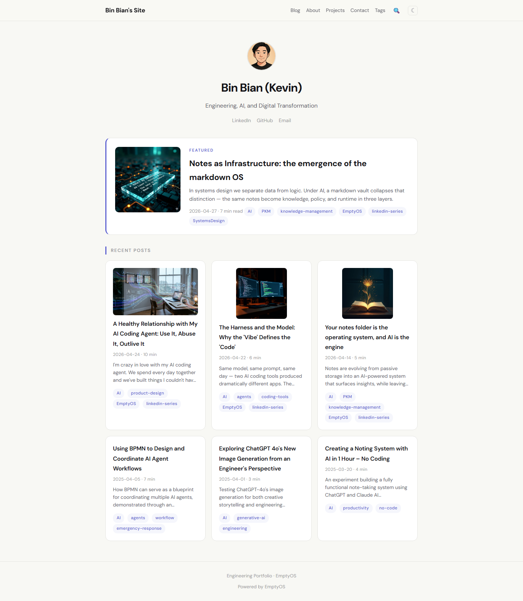

Publish
Turn your notes into a public site.¶
One folder of markdown becomes a domain with posts, projects, an about page, an atom feed, and full-text search. No CMS, no separate writing environment — the same notes you live in every day.

A real personal site generated from a markdown vaultHow it works¶
The publish app watches one folder in your vault — typically Published/. Any note with publish: true in its frontmatter becomes a page on the site. Three layouts ship built-in (landing, post, page); the rest is whatever frontmatter fields you want surfaced.
A draft stays private until you flip the flag. A retraction is one edit away. The site is regenerated each time a watched note changes; the deploy step pushes the static output to GitHub Pages, Netlify, or any host that serves static files.
What's surfaced¶
- Posts and projects indexed by frontmatter (date, tags, category)
- Atom feed generated from the posts list
- Full-text search baked into the static bundle — no server required
- Custom themes —
soft-light,eos, or your own CSS - Social cards auto-built from each post's summary
- Optional chatbot that answers questions about the site from your published notes
What you keep¶
Your writing stays in plain markdown files on your computer. Switch to a different publisher tomorrow and the writing is still there, exactly as you wrote it. The site is the output of your notes, not the home of them.